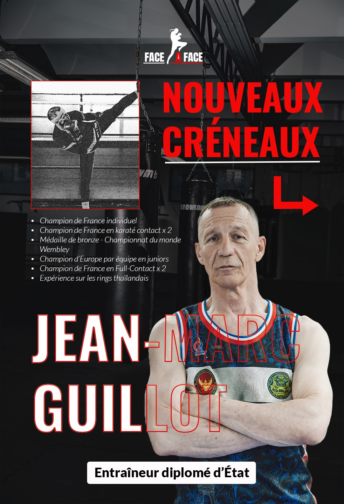
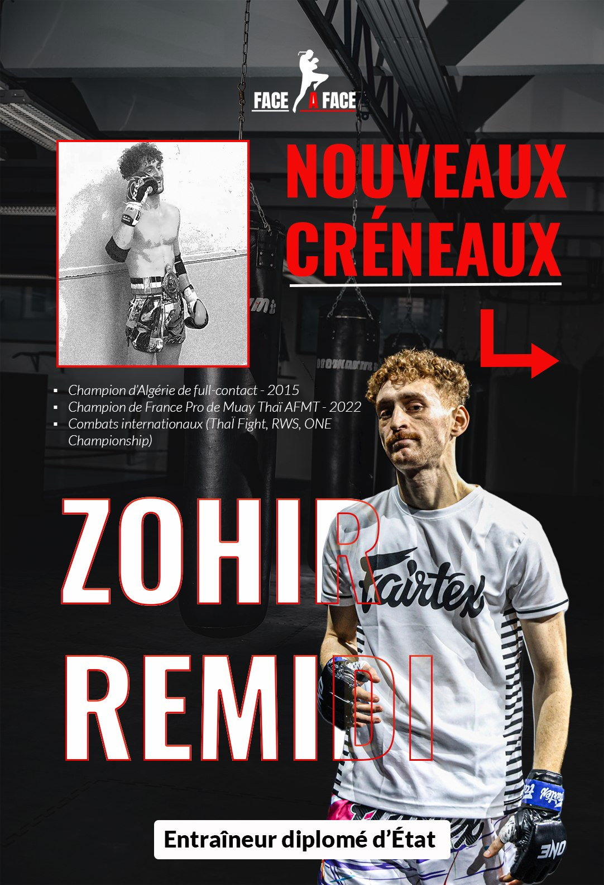
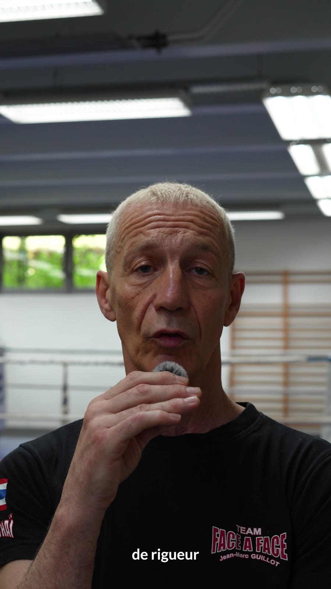
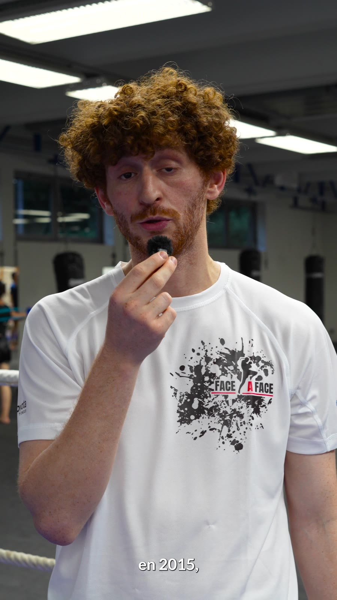

01

Face à Face — Club de Muay Thaï
Direction artistique — Contenu — Identité visuelle
Accompagnement créatif du club Face à Face autour de son image et de sa communication : direction artistique, production vidéo, photographie, créations graphiques et supports print.




